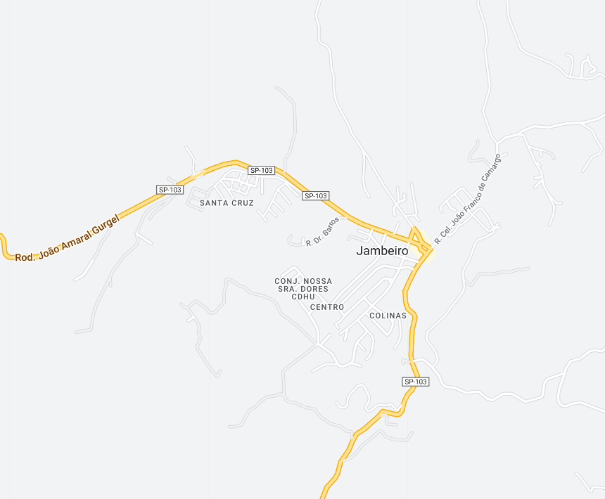
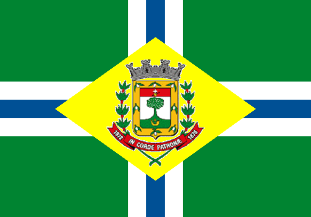

Jambeiro - Geodex


Município de Jambeiro
-
Populacão: 6.828 pessoas
-
Área: 184,413km²
-
Fundação: 1° de Janeiro de 1964
-
Distância da Capital: 121km
Jambeiro é uma cidade localizada no interior do estado de São Paulo, conhecida por sua tranquilidade e proximidade com a natureza. Fundada em 1º de janeiro de 1964, a cidade possui um clima agradável e uma população acolhedora. Com belas paisagens e uma rica diversidade natural, Jambeiro atrai visitantes interessados em explorar suas trilhas, cachoeiras e áreas de preservação ambiental. Além disso, o município valoriza sua cultura e história, promovendo festas típicas e preservando seu patrimônio arquitetônico, como a Igreja Matriz de São Benedito, que é um dos principais pontos turísticos da região.